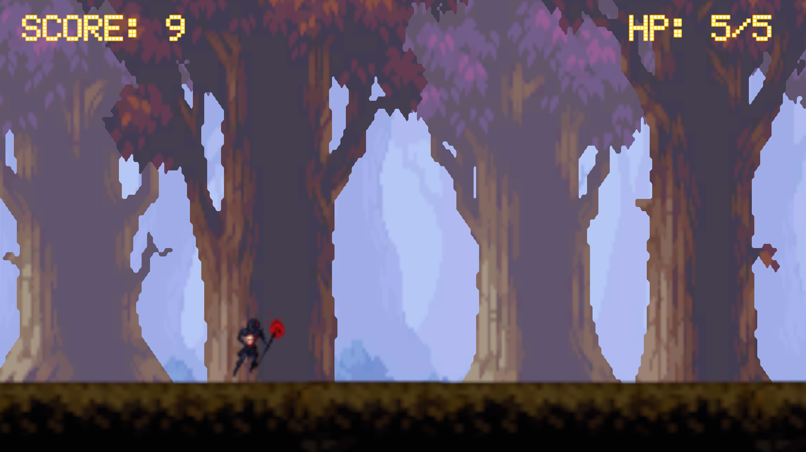
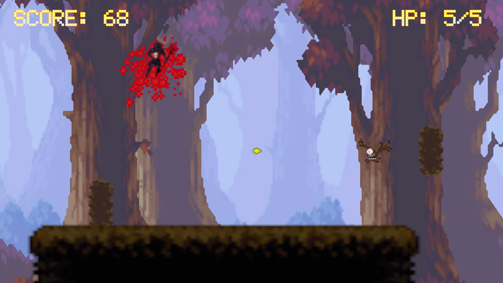
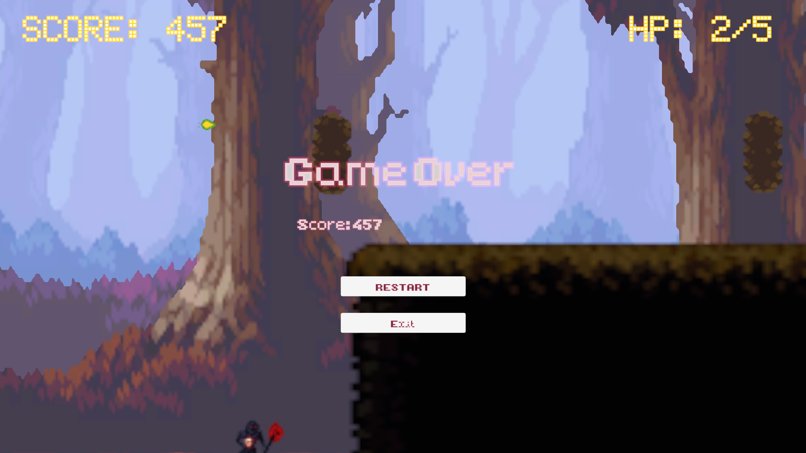
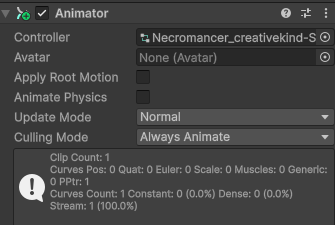
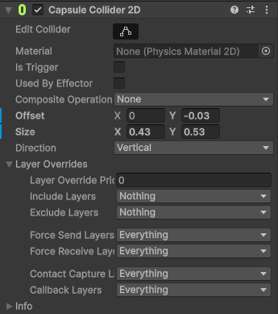
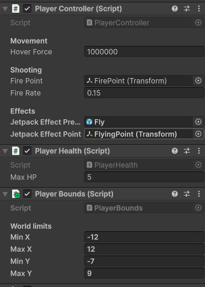
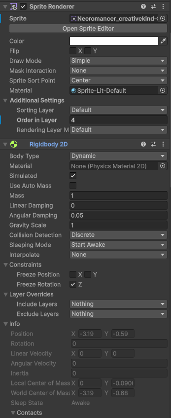

Overview
เกมนี้เป็นเกมแนว Endless Runner 2D ที่ให้ผู้เล่นรับบทเป็น DarkMage คอยสังหาร Monster ไปเรื่อยๆ เพื่อเก็บคะแนนให้ได้มากที่สุด
Solo Project: เป็นโปรเจกต์ที่ผมได้เริ่มทดลองสร้างเกม 2D ด้วยตัวเองคนเดียว โดยรับผิดชอบพัฒนาระบบทุกส่วน (Core Systems) ด้วยตนเอง ไม่ว่าจะเป็น Player Controller, Enemy AI, การจัดการ UI, รวมถึงการสร้าง Particle FX ด้วย Particle System โดยใช้ Open Source Assets นำมาประกอบกัน



Player Scripts & Components
- Player Controller & Combat: จัดการระบบควบคุมตัวละคร (Movement) และการโจมตี (Shooting) รวมถึงสร้างเอฟเฟกต์การยิงต่างๆ
- Player Health & Damage System: จัดการเลือด (HP) ระบบตรวจสอบการชน (TakeDamage) เมื่อชนกับวัตถุที่มี Tag "Obstacle" และอัปเดต UI แบบ Real-time
- Invincibility Frames (I-Frames) & Feedback: เมื่อผู้เล่นโดนโจมตี จะมีระบบอมตะชั่วคราว พร้อมสั่งให้ตัวละครกะพริบปิด-เปิด SpriteRenderer แจ้ง AudioManager เพื่อเล่นเสียงโดนตี และเรียกใช้ Camera Shake เพื่อเพิ่มแรงสั่นสะเทือนบนหน้าจอ
- Player Bounds (Screen Limits): เขียนระบบความปลอดภัยตรวจเช็คแกน X, Y ทุกๆ
Update()เพื่อป้องกันไม่ให้ผู้เล่นหลุดออกนอกกรอบจอ (ทะลุค่า minX, maxX, minY, maxY)



